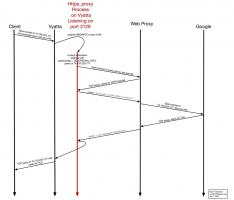

Also on blog.rchapman.org

Yubikey NEO for Physical Access …
After discovering that many physical access control systems are not …
Eclipse Remote System Explorer …
RSEG1066 Failed to connect sshd on …
Bypassing snoopy logging · Ryan A. …
I came across the snoopy logging program today, which is a way for …
Troubleshooting EAP-TLS with freeradius …
Ubuntu 14.04 (Linux 3.13.0-53), freeradius 2.1.12, wpa_supplicant …

Transparently proxying any tcp …
set service webproxy listen-address 10.18.11.5 commit save # # …